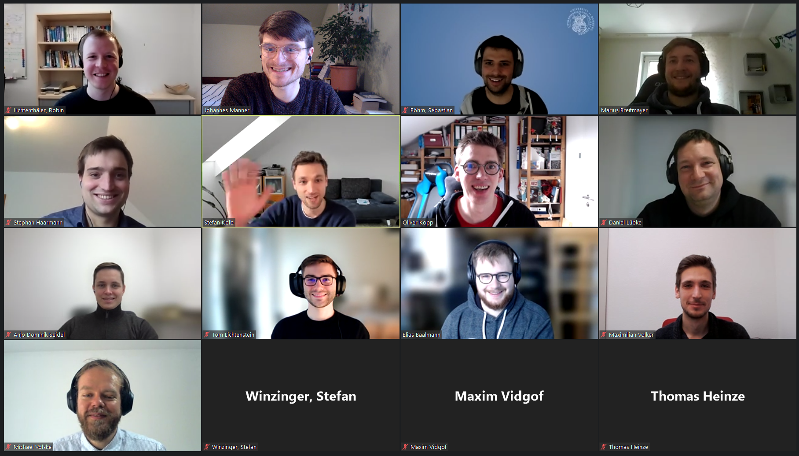

ZEUS Workshop 2022
February 24-25, 2022, Bamberg, but virtually due to Covid-19, Germany
Program
Thursday, February 24, 2022
- 09:00 Registration
- 09:30 Welcome
- 09:45 Paper Session I - Process Analytics
Daniel Lübke and Maike Ahrens.
Towards an Experiment for Analyzing Subprocess Navigation in BPMN Tooling
Finn Klessascheck.
Towards a Framework for Business Process Sustainability Analysis
Marius Breitmayer, Lisa Arnold and Manfred Reichert.
Towards Retrograde Process Analysis in Running Legacy Applications
- 11:15 Virtual Coffee Break
- 11:45 Keynote
Niall Deehan - Camunda GmbH.
Fixing Shortfalls of REST in Modern architectures
- 13:00 Virtual Lunch Break
- 14:00 Paper Session II - Process & Model Quality
Elias Baalmann and Daniel Lübke.
Algorithmic Classification of Layouts of BPMN Diagrams
Sandro Speth, Sarah Stieß and Steffen Becker.
A Vision for Explainability of Coordinated and Conflicting Adaptions in Self-Adaptive Systems
Anjo Seidel and Stephan Haarmann.
Decision Support for Knowledge-Intensive Processes
- 15:30 Virtual Coffee Break
- 16:00 Paper Session III - Business Process Modelling
Tom Lichtenstein.
Preserving Data Consistency in Process Choreographies by Design
Robin Lichtenthäler and Guido Wirtz.
A Review of Approaches for Quality Model Validations in the Context of Cloud-native Applications
- 19:00 Social Event – Exploring the kingdom
Friday, February 25, 2022
- 10:00 Keynote
Prof. Dr. Kurt Schneider - University of Hannover.
Socio-Technical Perspective on BPMN
- 11:15 Virtual Coffee Break
- 11:45 Paper Session IV - Process Visualization
Arvid Lepsien, Jan Bosselmann, Andreas Melfsen and Agnes Koschmider.
Process Mining on Video Data
Yusuf Kirikkayis, Florian Gallik and Manfred Reichert.
Visual Decision Modeling for IoT-Aware Processes
- 12:45 Virtual Lunch Break
- 13:45 Paper Session V - Mixed Evaluations
Jasmin Türker, Michael Völske and Thomas Heinze.
BPMN in the Wild: A Reprise
Robin Lichtenthäler, Sebastian Böhm, Johannes Manner and Stefan Winzinger.
A Use Case-based Investigation of Low-Code Development Platforms
- 14:45 Closing Session, Best Presentation Award

Workshop
Web Chairs
Local Organizer
Proceedings